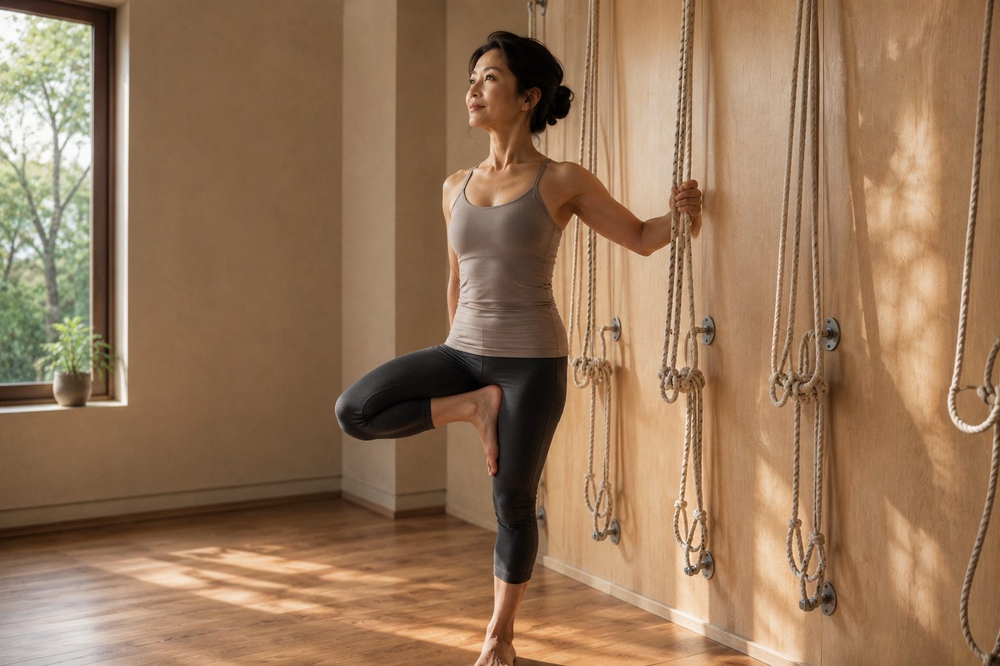
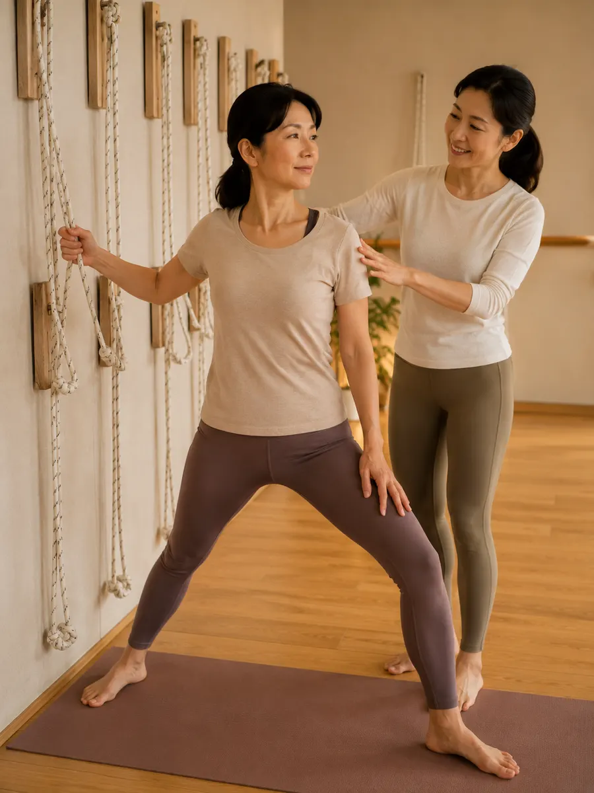

筋骨很硬、零基礎可以練壁繩嗎？怕跟不上怎麼開始？

第一次到教室，別人彎腰時手快碰到地，你才剛往前一點就想把膝蓋鎖住。最想問的可能只有一句：我可以做少一點嗎？
筋骨硬的初學者可以先了解能調整幅度的壁繩課。當雙腳著地、手握合適高度的繩帶，牆面支點可讓手腳一起分配用力，老師也能先縮短動作。重點是能自在呼吸、停住並回到起始位置。柔軟度只是起點之一，是否適合仍要看動作感受與個人狀況。
身體很硬，第一堂可以只做小幅度嗎？
可以先告訴老師哪個動作讓你最沒把握，例如手一往前伸就想聳肩，或屈髖時總覺得要往前倒。老師可以先試雙腳著地、繩帶握高一點或縮短前後站距。如果想先理解牆面支點是怎麼設計的，看完基礎再決定要不要體驗。

👆 手機版可左右滑動
| 初學時的顧慮 | 可請老師怎麼調整 | 用什麼感受判斷合不合適 |
|---|---|---|
| 手碰不到地 | 把握點提高，動作做到手腳仍有支撐。 | 能自然呼吸並慢慢回來。 |
| 動作換太快 | 先練單一動作，熟悉起始、停留與回程。 | 記得怎麼安全退出動作。 |
| 手臂一拉就聳肩 | 先減少拉繩力道，站近一點。 | 能說出哪裡在出力，不必一直咬牙。 |
怕跟不上同學，上課前可以先問什麼？
先問老師能不能慢一點示範、能不能中途休息，以及如果某個位置不舒服可以怎麼改做。想知道當天會發生什麼，可看第一次上壁繩課的流程；如果你其實喜歡墊上課，只擔心步調太快，可先看壁繩與墊上課怎麼選。還說不出自己最常在哪裡硬撐，可以先做體態訊號掃描，帶著一個日常情境來。

本文是一般動作與課程資訊。若練習引發明顯不適，先停止並依情況尋求醫療專業評估。
常見問題
要先把筋拉軟再去上課嗎？
可以先找能調整支點與幅度的入門課，並事先告訴老師你對哪些動作沒有把握。
墊上前彎碰不到地，壁繩會比較容易開始嗎？
繩帶可提供較高握點，有助於試不同幅度，實際感受依動作與個人狀態而異。
可以不做同學正在做的動作嗎？
可以請老師給較小幅度、仍有雙腳支撐的版本，必要時先休息。
第一堂一定要倒立嗎？
可以先問教室是否能從雙腳著地的入門練習開始。
什麼時候應停止練習？
動作若引發疼痛、麻木或明顯不適，先停下並告知老師。持續不適可先尋求醫療評估。
把最擔心的動作說清楚，比記住一個柔軟度分數更能幫你和老師溝通。開始免費體態訊號掃描。
給僵硬族的下一步
想親身體驗壁繩承重 30%～70% 的無痛伸展？歡迎參考高雄左營 鑫彥瑜珈課程方式，或先透過 NT$299 AI 體態檢測 找出卡住的起點。